Estadística para la toma de decisiones
dgonzalez

Introducción
Una gráfica o una representación gráfica o un gráfico, es un tipo de representación de datos, generalmente cuantitativos, mediante recursos visuales (líneas, vectores, superficies o símbolos), para que se manifieste visualmente la relación matemática o correlación estadística que guardan entre sí.
Wikipedia
En esta unidad vamos a revisar cómo elegir y construir gráficos que apoyen el análisis en administración y mercadeo. La idea es que cada visualización responda a una pregunta concreta (por ejemplo: ¿qué producto vende más?, ¿cómo se comporta la demanda en el tiempo?, ¿qué segmentos son diferentes?) y no sea solo un adorno.
Paquetes de R para gráficos
R posee numerosos paquetes para visualizar datos con excelente presentación: desde las funciones del núcleo base hasta bibliotecas que producen gráficos interactivos.
En el trabajo profesional, el objetivo es comunicar hallazgos a equipos y directivos. Por eso aquí verás opciones desde gráficos rápidos en R base hasta alternativas más flexibles e interactivas, útiles para reportes ejecutivos y tableros.

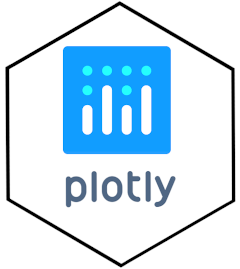
Paquetes de R para gráficos y soluciones gráficas
| Categoría | Paquetes (ejemplos) | ¿Para qué sirven? |
|---|---|---|
| Gráficos base / extensiones de ggplot2 | ggthemes, ggrepel, patchwork,
cowplot, ggpubr, ggridges,
GGally |
Mejorar estética, etiquetas, combinar gráficos, figuras tipo “paper”, ridgelines, matrices de dispersión |
| Dashboards y reportes | rmarkdown, quarto,
shinydashboard, bslib, golem,
htmlwidgets |
Reportes reproducibles, dashboards en Shiny, estilos Bootstrap, estructura profesional de apps, widgets embebibles |
| Interactivos (además de plotly) | leaflet, mapview, DT,
echarts4r, apexcharter,
ggiraph |
Mapas interactivos, tablas interactivas, gráficos web modernos, interactividad (hover/click) sobre ggplot |
| Mapas y análisis espacial | sf, terra, raster,
tmap, ggspatial |
Manejo de datos espaciales (vectores/raster), cartografía estática/interactiva, elementos cartográficos en ggplot |
| Redes y diagramas | igraph, ggraph, DiagrammeR,
networkD3 |
Redes (nodos/aristas), grafos con gramática tipo ggplot, diagramas de flujo, redes interactivas tipo D3 |
| Visualizaciones “especiales” | corrplot, ggcorrplot,
pheatmap, ComplexHeatmap,
treemapify, waffle |
Correlaciones, heatmaps avanzados, treemaps, gráficos waffle |
Elegir el gráfico adecuado es tan importante como construirlo. La decisión depende del tipo de variable, la pregunta de análisis y el público al que se dirige.
Antes de graficar, identifica la variable principal (cualitativa o cuantitativa) y el objetivo del análisis (comparar, describir distribución, identificar tendencias, etc.). Esa decisión guía el tipo de gráfico.
En términos prácticos, los gráficos se pueden agrupar según la pregunta que quieres responder:
- Comparación: barras y columnas para contrastar categorías (marcas, productos, canales).
- Composición: tortas o barras apiladas para mostrar participación o cuota.
- Distribución: histogramas, densidades y cajas para entender cómo se dispersan los datos.
- Relación: dispersión para ver asociaciones entre dos variables (precio vs. demanda).
- Evolución en el tiempo: líneas o series de tiempo para observar tendencias y estacionalidad.
- Jerarquía o composición con muchas categorías: treemap o barras apiladas.
- Patrones en dos dimensiones: mapas de calor para cruces como día y hora.
- Indicadores frente a una meta: bullet chart o barras con una línea de referencia.
| Pregunta | Gráfico recomendado | Evita |
|---|---|---|
| ¿Qué categoría tiene mayor valor? | Barras ordenadas o lollipop | Tortas con muchas categorías |
| ¿Cómo cambia una métrica en el tiempo? | Línea | Barras para series largas |
| ¿Cómo se distribuyen los valores? | Histograma, densidad o violín | Mostrar solo el promedio |
| ¿Existe relación entre dos variables? | Dispersión | Ejes truncados sin advertencia |
| ¿Dónde se concentran dos variables categóricas? | Mapa de calor | Tablas extensas sin jerarquía visual |
| ¿El lector necesita explorar detalles? | Gráfico o tabla interactiva | Interacción sin instrucciones |
También es clave considerar el público. Si el gráfico va dirigido a directivos o clientes, prioriza claridad y mensajes clave. Si es para análisis técnico, puedes incluir más detalle (como distribución o valores atípicos).
Ejemplos aplicados:
- Comparación: ventas por línea de producto en un trimestre.
- Composición: participación de mercado por marca en un sector.
- Distribución: variabilidad del ticket promedio por cliente.
- Relación: inversión en pauta digital vs. conversiones.
- Evolución en el tiempo: visitas al sitio web mes a mes y picos en campañas.
# Comparación: ventas por línea de producto
ventas_prod <- data.frame(
producto = c("A", "B", "C", "D"),
ventas = c(120, 95, 140, 80)
)
barplot(
ventas_prod$ventas,
names.arg = ventas_prod$producto,
col = c11,
main = "Ventas por línea de producto",
ylab = "Unidades"
)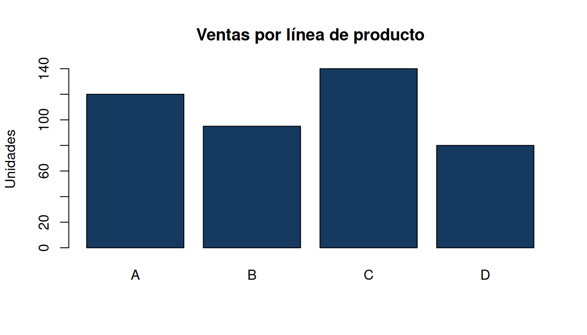
# Composición: participación de mercado por marca
participacion <- data.frame(
marca = c("Marca 1", "Marca 2", "Marca 3", "Otros"),
share = c(35, 25, 20, 20)
)
pie(
participacion$share,
labels = paste0(participacion$marca, " (", participacion$share, "%)"),
main = "Participación de mercado por marca",
col = paleta4
)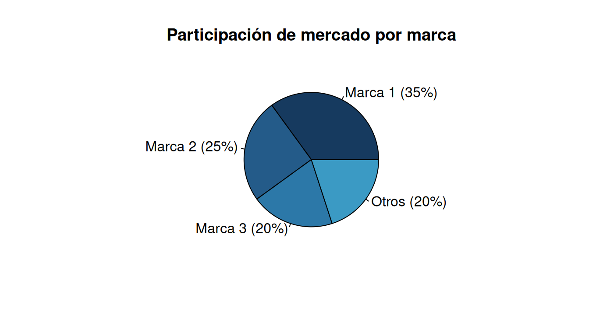
# Distribución: ticket promedio por cliente
set.seed(123)
ticket <- rnorm(120, mean = 85, sd = 20)
hist(
ticket,
col = c21,
main = "Distribución del ticket promedio",
xlab = "Ticket (miles de $)",
ylab = "Frecuencia"
)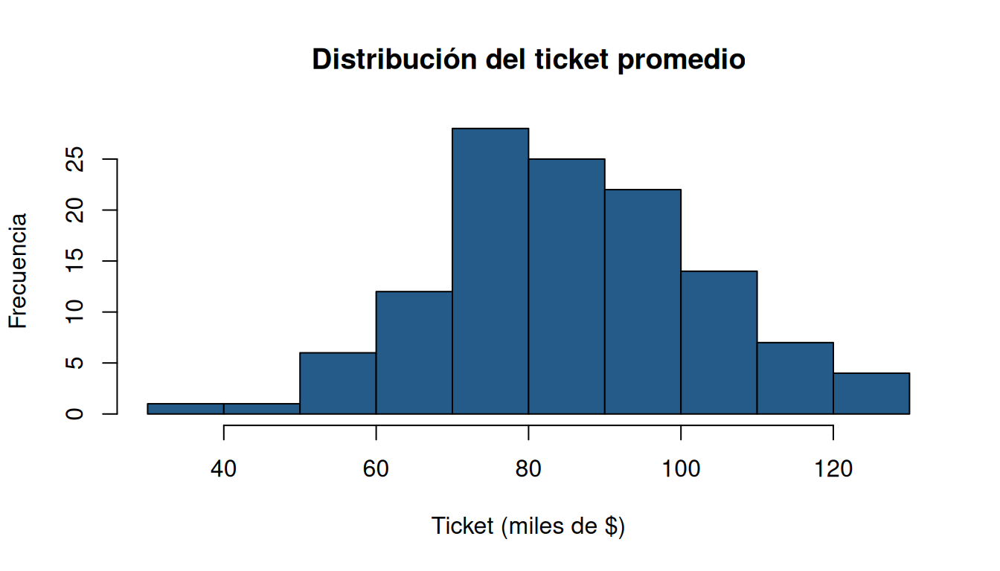
# Relación: inversión en pauta digital vs conversiones
inv <- c(10, 15, 20, 25, 30, 35, 40)
conv <- c(120, 150, 190, 210, 260, 300, 330)
plot(
inv, conv,
pch = 19, col = c11,
main = "Inversión vs conversiones",
xlab = "Inversión (millones)",
ylab = "Conversiones"
)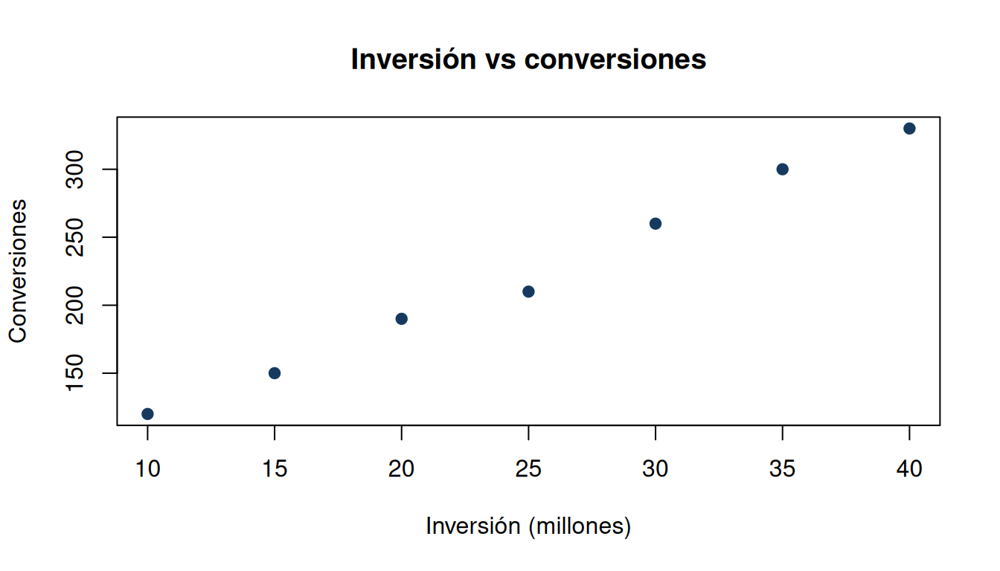
# Evolución en el tiempo: visitas al sitio web
mes <- c("Ene","Feb","Mar","Abr","May","Jun","Jul","Ago","Sep","Oct","Nov","Dic")
visitas <- c(12, 14, 15, 18, 22, 25, 30, 28, 24, 20, 18, 16)
plot(
visitas,
type = "o", col = c31, lwd = 2, pch = 19,
xaxt = "n",
main = "Visitas al sitio web por mes",
xlab = "Mes",
ylab = "Miles de visitas"
)
axis(1, at = 1:12, labels = mes)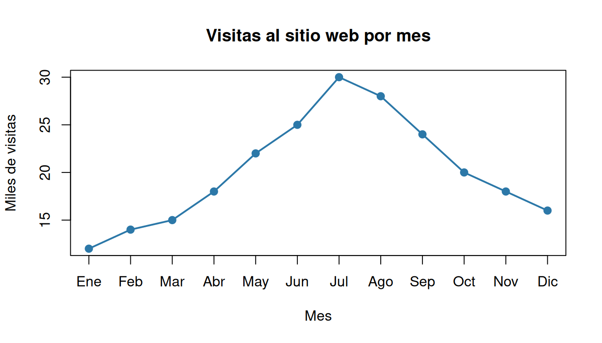
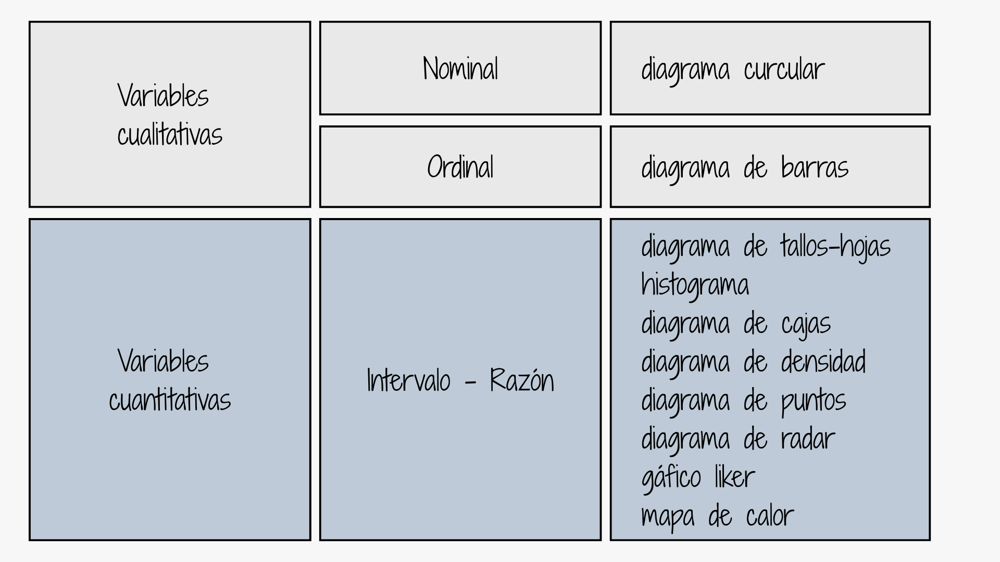
Gráficos variables cualitativas
Gráfico de tortas o diagrama circular
Este gráfico es útil para mostrar participaciones o cuotas de mercado. Se recomienda cuando hay pocas categorías y se desea resaltar la proporción de cada una.
a=rep("Cultural", 360145)
b=rep("Pastoral", 61496)
c=rep("Bienestar",49912)
d=rep("Deportivo",11777)
data=c(a,b,c,d)
t=table(data)
lbs=c("Cultural", "Pastoral", "Bienestar", "Deportivo")
pct=round(t/sum(t)*100)
labs=paste(lbs, pct)
labs=paste(labs, "%", sep = " ")
pie(t, labels=labs, main=" Participación eventos Medio Universitario",
col = paleta4)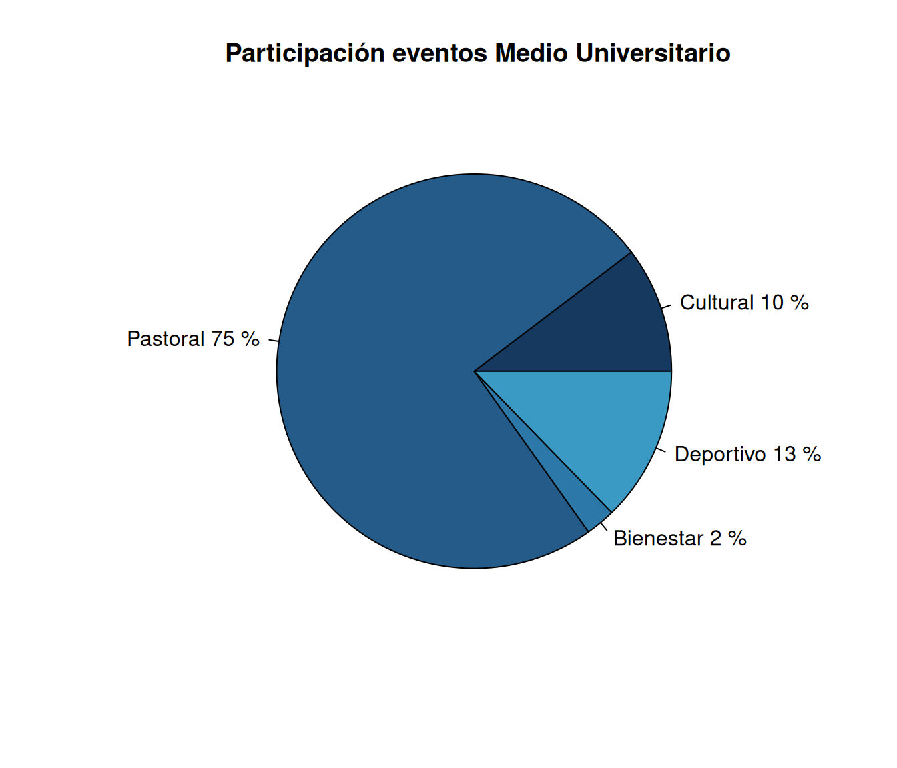
Diagrama de barras
Las barras permiten comparar categorías con facilidad. En mercadeo se usan, por ejemplo, para comparar niveles de satisfacción o respuestas a encuestas por opciones.
ev=c(4, 8, 12, 43, 32)
names(ev)=c("Muy regular", "Regular", "Bueno", "Muy bueno","Excelente")
barplot(ev, col = paleta_curso[1:5], main = "Evaluación del proceso de inducción")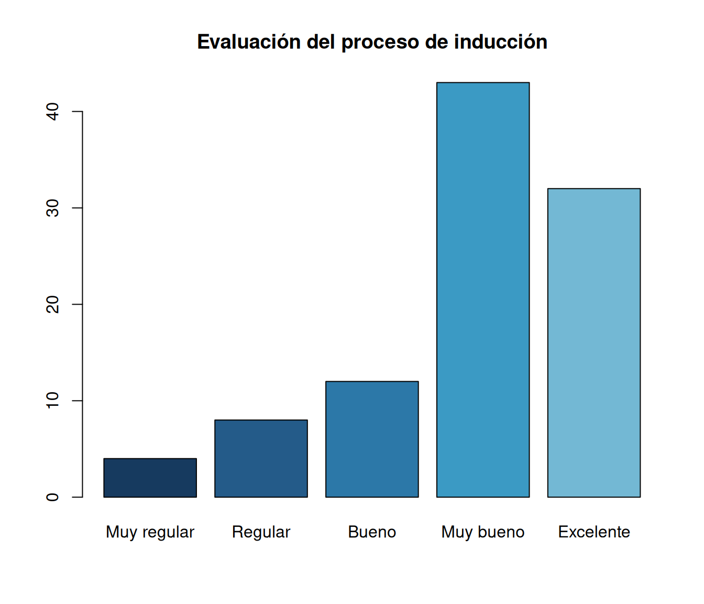
Diagrama de barras dos variables
Cuando se cruzan dos variables categóricas, las barras agrupadas permiten comparar combinaciones (p. ej., tipo de producto vs. canal). Esto ayuda a detectar patrones por segmento.
set.seed(123)
canal <- sample(c("Digital", "Tienda fisica"), 150, replace = TRUE, prob = c(0.6, 0.4))
categoria <- sample(c("Aseo", "Bebidas", "Snacks"), 150, replace = TRUE)
counts <- table(canal, categoria)
barplot(
counts,
main = "Ventas por categoría y canal",
xlab = "Categoría de producto",
col = c(c11, c41),
legend = rownames(counts)
)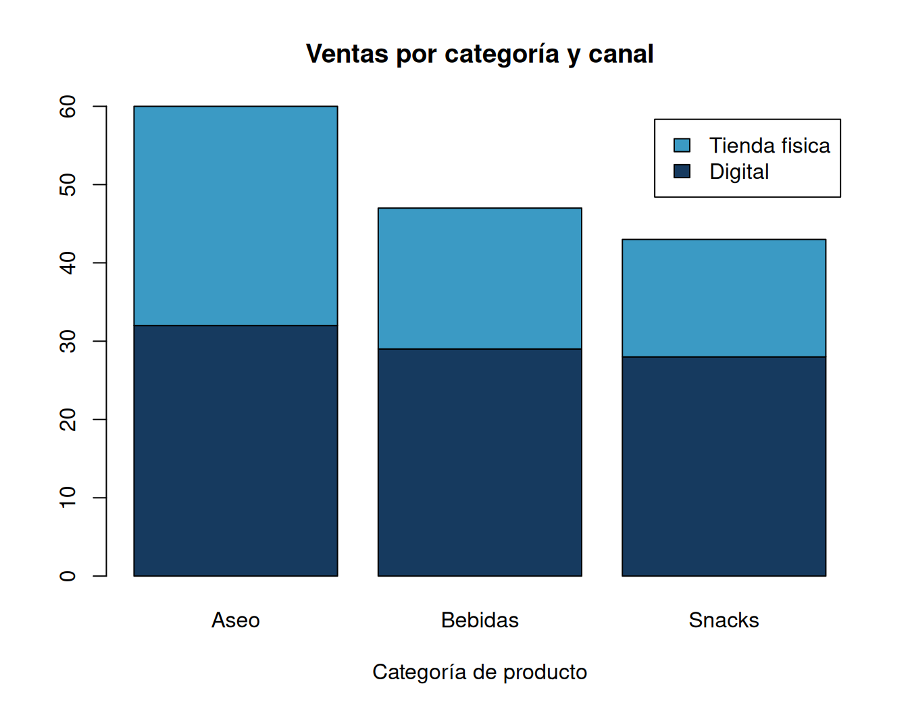
Gráficas variables cuantitativas
En variables numéricas nos interesa describir la distribución, la tendencia y la dispersión. Los siguientes gráficos ayudan a responder preguntas como: ¿hay valores atípicos?, ¿la distribución es simétrica?, ¿existen agrupaciones?
Diagrama de árbol
El diagrama de tallos y hojas permite ver valores individuales y su frecuencia sin perder detalle. Es una buena alternativa cuando el conjunto de datos no es muy grande.
nf=c(4.1, 2.7, 3.1, 3.2, 3.0, 3.2, 2.0, 2.4, 1.6, 3.2, 3.1, 2.6, 2.0, 2.4, 2.8, 3.3, 4.0, 3.4, 3.0, 3.1, 2.7, 2.7, 3.0, 3.8, 3.2, 2.2, 3.5, 3.5, 3.8, 3.5, 3.9, 4.2, 4.3, 3.9, 3.2, 3.5, 3.5, 3.7, 4.1, 3.7, 3.5, 3.6, 3.2, 3.1, 3.4, 3.0, 3.0, 3.0, 2.7, 1.7, 3.6, 2.1, 2.4, 3.0, 3.1, 2.5, 2.5, 3.6, 2.2, 2.4, 3.1, 3.3, 2.7, 3.7, 3.0, 2.7, 3.0, 3.2, 3.1, 2.4, 3.0, 2.7, 2.5, 3.0, 3.0, 3.0, 3.2, 3.1, 3.8, 4.1, 3.7, 3.5, 3.0, 3.7, 3.7, 4.1, 3.7, 3.9, 3.7, 2.0)
stem(nf)
The decimal point is at the |
1 | 67
2 | 00012244444
2 | 555677777778
3 | 0000000000000011111111222222223344
3 | 555555566677777777888999
4 | 0111123Este diagrama ordena los datos y permite identificar rápidamente el mínimo, el máximo y el rango donde se concentra la mayor parte del ticket promedio por cliente.
Histograma
El histograma resume la distribución de una variable. En contextos de negocio puede servir para ver la dispersión de tiempos de entrega o el rango de ventas por cliente.
nf=c(4.1, 2.7, 3.1, 3.2, 3.0, 3.2, 2.0, 2.4, 1.6, 3.2, 3.1, 2.6, 2.0, 2.4, 2.8, 3.3, 4.0, 3.4, 3.0, 3.1, 2.7, 2.7, 3.0, 3.8, 3.2, 2.2, 3.5, 3.5, 3.8, 3.5, 3.9, 4.2, 4.3, 3.9, 3.2, 3.5, 3.5, 3.7, 4.1, 3.7, 3.5, 3.6, 3.2, 3.1, 3.4, 3.0, 3.0, 3.0, 2.7, 1.7, 3.6, 2.1, 2.4, 3.0, 3.1, 2.5, 2.5, 3.6, 2.2, 2.4, 3.1, 3.3, 2.7, 3.7, 3.0, 2.7, 3.0, 3.2, 3.1, 2.4, 3.0, 2.7, 2.5, 3.0, 3.0, 3.0, 3.2, 3.1, 3.8, 4.1, 3.7, 3.5, 3.0, 3.7, 3.7, 4.1, 3.7, 3.9, 3.7, 2.0)
h1 = hist(nf, main = "Distribución del ticket promedio por cliente", xlab = "ticket (decenas de miles COP)", ylab="frecuencias absolutas", labels=TRUE, col=c21, ylim = c(0,30))
abline(v=3,col=c31, lwd=2)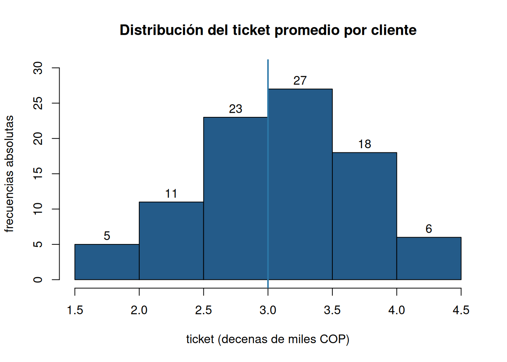
h1$breaks
[1] 1.5 2.0 2.5 3.0 3.5 4.0 4.5
$counts
[1] 5 11 23 27 18 6
$density
[1] 0.1111111 0.2444444 0.5111111 0.6000000 0.4000000 0.1333333
$mids
[1] 1.75 2.25 2.75 3.25 3.75 4.25
$xname
[1] "nf"
$equidist
[1] TRUE
attr(,"class")
[1] "histogram"Diagrama de densidad
La densidad muestra la forma general de la distribución suavizada. Es útil para comparar rápidamente perfiles de consumo o niveles de gasto.
nf=c(4.1, 2.7, 3.1, 3.2, 3.0, 3.2, 2.0, 2.4, 1.6, 3.2, 3.1, 2.6, 2.0, 2.4, 2.8, 3.3, 4.0, 3.4, 3.0, 3.1, 2.7, 2.7, 3.0, 3.8, 3.2, 2.2, 3.5, 3.5, 3.8, 3.5, 3.9, 4.2, 4.3, 3.9, 3.2, 3.5, 3.5, 3.7, 4.1, 3.7, 3.5, 3.6, 3.2, 3.1, 3.4, 3.0, 3.0, 3.0, 2.7, 1.7, 3.6, 2.1, 2.4, 3.0, 3.1, 2.5, 2.5, 3.6, 2.2, 2.4, 3.1, 3.3, 2.7, 3.7, 3.0, 2.7, 3.0, 3.2, 3.1, 2.4, 3.0, 2.7, 2.5, 3.0, 3.0, 3.0, 3.2, 3.1, 3.8, 4.1, 3.7, 3.5, 3.0, 3.7, 3.7, 4.1, 3.7, 3.9, 3.7, 2.0)
plot(density(nf), main="Distribución del ticket promedio de clientes", col=c21, lwd=2)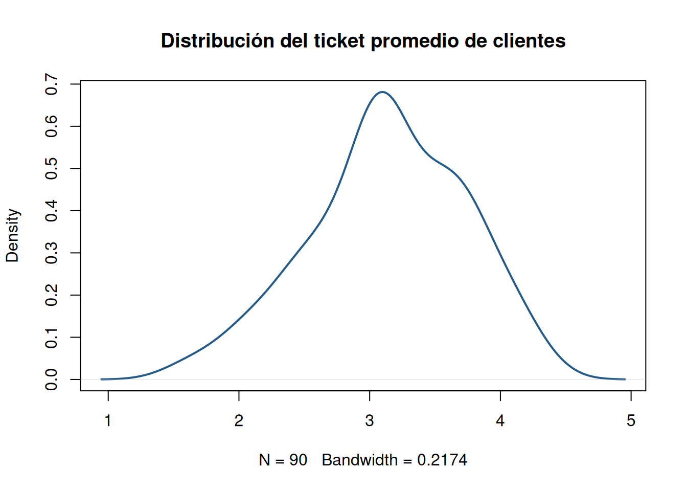
Diagrama de cajas
El boxplot resume mediana, cuartiles y valores atípicos. Es ideal para comparar desempeño entre productos, tiendas o periodos.
nf=c(4.1, 2.7, 3.1, 3.2, 3.0, 3.2, 2.0, 2.4, 1.6, 3.2, 3.1, 2.6, 2.0, 2.4, 2.8, 3.3, 4.0, 3.4, 3.0, 3.1, 2.7, 2.7, 3.0, 3.8, 3.2, 2.2, 3.5, 3.5, 3.8, 3.5, 3.9, 4.2, 4.3, 3.9, 3.2, 3.5, 3.5, 3.7, 4.1, 3.7, 3.5, 3.6, 3.2, 3.1, 3.4, 3.0, 3.0, 3.0, 2.7, 1.7, 3.6, 2.1, 2.4, 3.0, 3.1, 2.5, 2.5, 3.6, 2.2, 2.4, 3.1, 3.3, 2.7, 3.7, 3.0, 2.7, 3.0, 3.2, 3.1, 2.4, 3.0, 2.7, 2.5, 3.0, 3.0, 3.0, 3.2, 3.1, 3.8, 4.1, 3.7, 3.5, 3.0, 3.7, 3.7, 4.1, 3.7, 3.9, 3.7, 2.0)
boxplot(nf, main="Ticket promedio por cliente",col=c21, las=1)
abline(h=3, col=c41)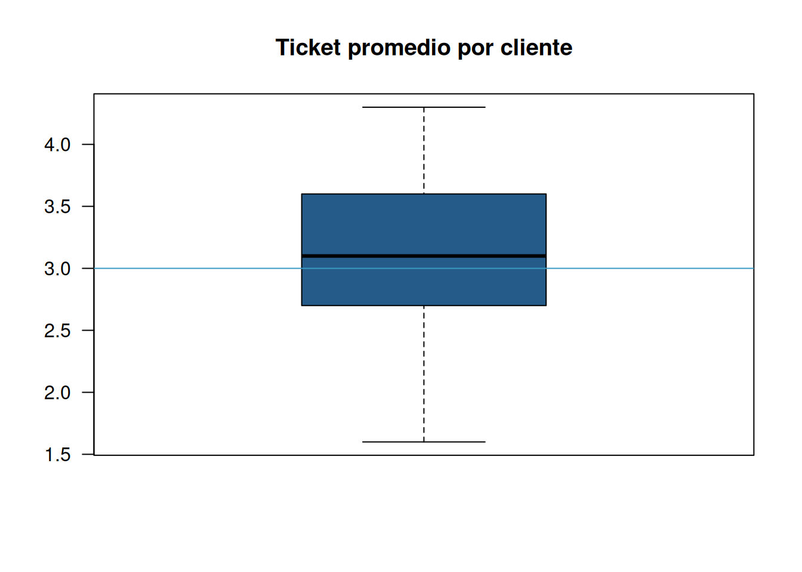
Diagrama de cajas por factor
Aquí se compara la distribución por grupos. Esta lógica es muy útil para comparar resultados por canal, sede, segmento o región.
nf=c(4.1, 2.7, 3.1, 3.2, 3.0, 3.2, 2.0, 2.4, 1.6, 3.2, 3.1, 2.6, 2.0, 2.4, 2.8, 3.3, 4.0, 3.4, 3.0, 3.1, 2.7, 2.7, 3.0, 3.8, 3.2, 2.2, 3.5, 3.5, 3.8, 3.5, 3.9, 4.2, 4.3, 3.9, 3.2, 3.5, 3.5, 3.7, 4.1, 3.7, 3.5, 3.6, 3.2, 3.1, 3.4, 3.0, 3.0, 3.0, 2.7, 1.7, 3.6, 2.1, 2.4, 3.0, 3.1, 2.5, 2.5, 3.6, 2.2, 2.4, 3.1, 3.3, 2.7, 3.7, 3.0, 2.7, 3.0, 3.2, 3.1, 2.4, 3.0, 2.7, 2.5, 3.0, 3.0, 3.0, 3.2, 3.1, 3.8, 4.1, 3.7, 3.5, 3.0, 3.7, 3.7, 4.1, 3.7, 3.9, 3.7, 2.0)
set.seed(123)
canal <- sample(c("Digital", "Tienda física", "Mayorista"), length(nf), replace = TRUE)
labs=c("Digital","Tienda física","Mayorista")
boxplot((nf~canal),main="Ticket promedio por canal de venta",
col=c(c21,c51,c41), names=labs, xlab = "canal", ylab = "ticket")
abline(h=3, col=c31, lwd=2)
abline(h=4, col=c11, lwd=2)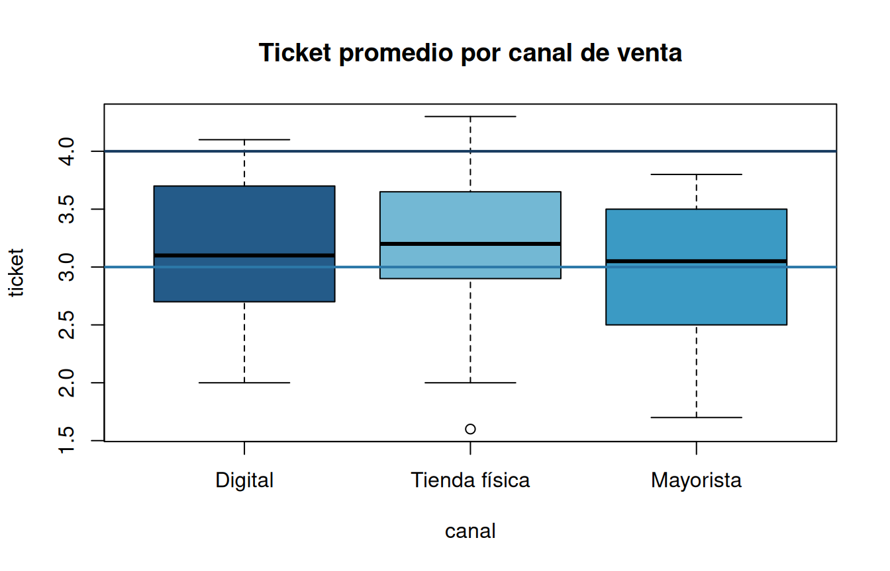
Diagrama de dispersión
Este gráfico permite analizar la relación entre dos variables numéricas. En administración es clave para explorar asociaciones como inversión publicitaria vs. ventas.
set.seed(123)
inversion_digital <- runif(90, 8, 40)
ventas_mensuales <- 60 + 9 * inversion_digital + rnorm(90, 0, 25)
plot(inversion_digital, ventas_mensuales, main="Inversión digital vs ventas", xlab = "Inversión (millones COP)", ylab = "Ventas (millones COP)",col=c11,pch=19)
grid()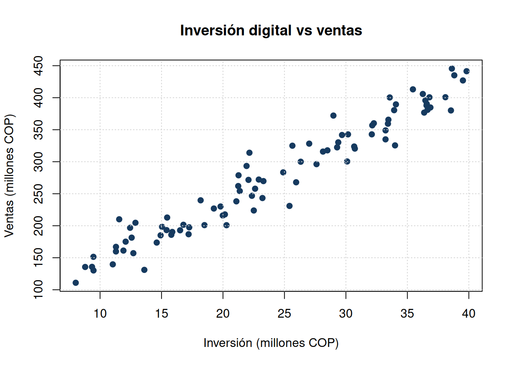
Gráfica de series de tiempo
Las series de tiempo muestran el comportamiento a lo largo de meses o años. Son fundamentales para analizar tendencias, estacionalidad y cambios en la demanda.
ventas_ts <- ts(c(120, 132, 128, 140, 155, 162, 170, 168, 160, 158, 166, 180), frequency = 12, start = c(2025, 1))
plot(ventas_ts, main="Ventas mensuales de la compañía", ylab = "Ventas (millones COP)", xlab = "Mes", col=c31, lwd = 2)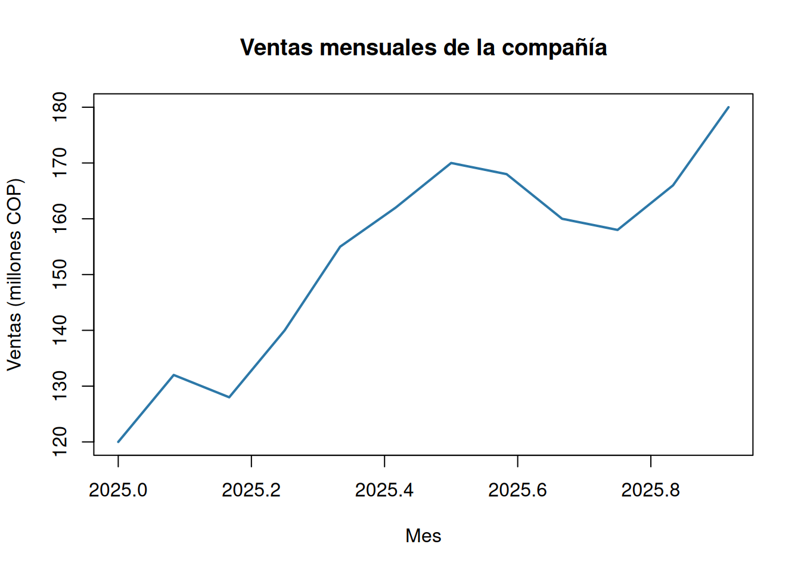
Resumen
El siguiente bloque resume varios tipos de gráficos en una sola vista. Úsalo como referencia rápida de qué gráfico elegir según el tipo de variable y el objetivo del análisis.
x=rnorm(100,100,20)
y=rnorm(100,100,25)
z=rbinom(100,4,0.30)
t=1:100
op <- par(no.readonly = TRUE)
par(
mfrow = c(2, 2),
mar = c(4.5, 4.5, 2.5, 1),
cex.axis = 1.25,
cex.lab = 1.2
)
# Panel circular: menor margen y mayor diámetro
par(mar = c(1, 1, 1, 1))
pie(table(z), radius = 1, cex = 1.15)
# Restaurar márgenes amplios para leer mejor las escalas
par(mar = c(4.5, 4.5, 2.5, 1))
barplot(table(z))
stem(x)
The decimal point is 1 digit(s) to the right of the |
6 | 89
7 | 01114445556899
8 | 0002345566688999
9 | 00001122333344555668899
10 | 11122244566779
11 | 01122344455568
12 | 01223556
13 | 3489
14 | 0234
15 |
16 | 5hist(x)
boxplot(x, frame.plot = FALSE)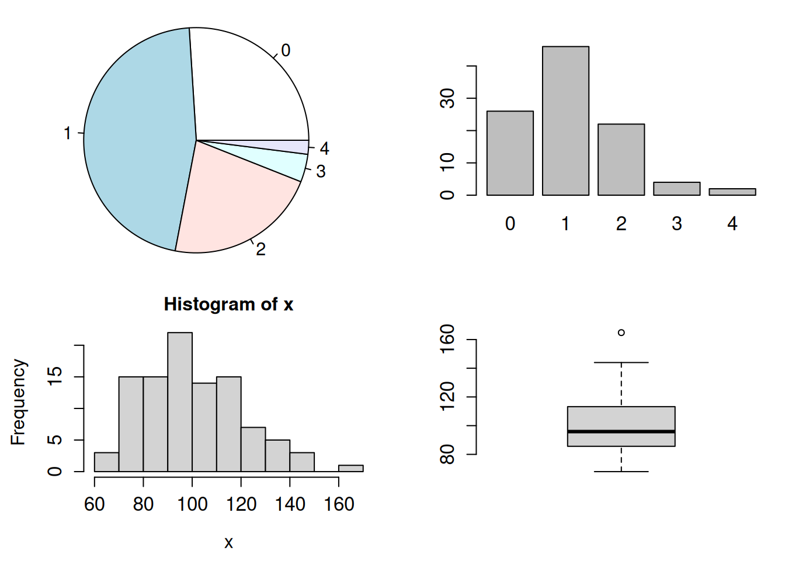
plot(x,y)
plot(t,y, type="l")
plot(density(x))
par(op)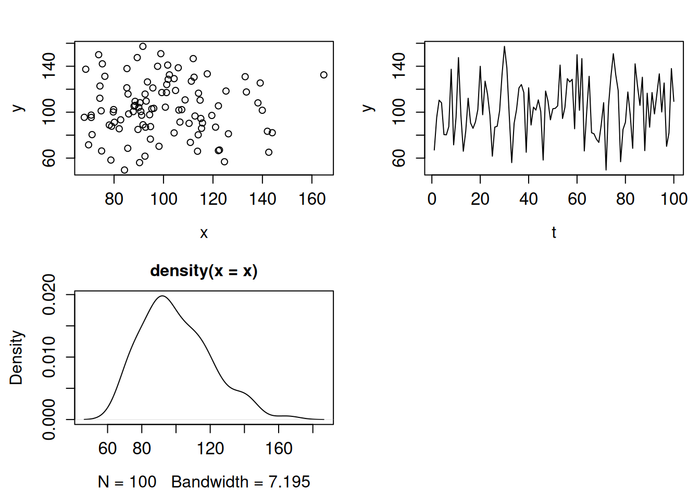
Gráficos con ggplot2
ggplot2 es el paquete más usado en R para visualización.
Su lógica por capas facilita construir gráficos claros y consistentes,
lo cual es muy útil para reportes académicos y corporativos.
Data: capa de los datos. Aquí defines el dataset, por ejemplo una tabla de ventas, clientes o campañas.
Aesthetics: capa estética (aes), definimos las variables a utilizar en el gráfico. Ejemplo:
x = mes,y = ventas,color = canal.Geometries: capa de geometrías, se define el tipo de gráfica a realizar. Por ejemplo barras para comparar productos o líneas para ver tendencias.
Facets: capa de facetas, permite detallar la gráfica por categorías. Útil para comparar sedes, segmentos de clientes o regiones.
Statistics: capa de estadística, permite agregar modelos. Por ejemplo, una línea de tendencia para evaluar crecimiento de ingresos.
Coordinates: capa de coordenadas, permite ajustar las escalas de los ejes. Ayuda a enfocar rangos relevantes (p. ej. solo 2023-2025).
Theme: capas de características del gráfico que no dependen de los datos. Se usa para estilos y legibilidad en reportes ejecutivos.
gráfico = data + aesthetics + geometries + facets + statistics + coordinates + themes
Primer paso:
Instalar y cargar la libreria
Primero instalamos y cargamos la librería. Esto se hace una sola vez por equipo (instalación) y luego se carga en cada sesión de trabajo.
# Instalar ggplot2 si no lo tienes
install.packages("ggplot2")
# Cargar la librería ggplot2
library(ggplot2)
# Instalar ggplot2 si no lo tienes
install.packages("ggplot2")
# Cargar la librería ggplot2
library(ggplot2)
Segundo paso:
Declarar la base de datos y las variables
Aquí definimos la base y las variables que vamos a comparar. En este ejemplo, relacionamos inversión en pauta y ventas, segmentando por canal.
campanas <- tibble(
inversion = c(8, 10, 12, 15, 18, 20, 22, 25, 28, 30, 35, 40),
ventas = c(102, 108, 120, 119, 108, 121, 145, 175, 147, 177, 163, 192),
canal = factor(c("Digital", "Digital", "Retail", "Retail", "Mayorista", "Digital",
"Retail", "Mayorista", "Digital", "Retail", "Mayorista", "Digital"))
)
p <- ggplot(campanas, aes(x = inversion, y = ventas))
p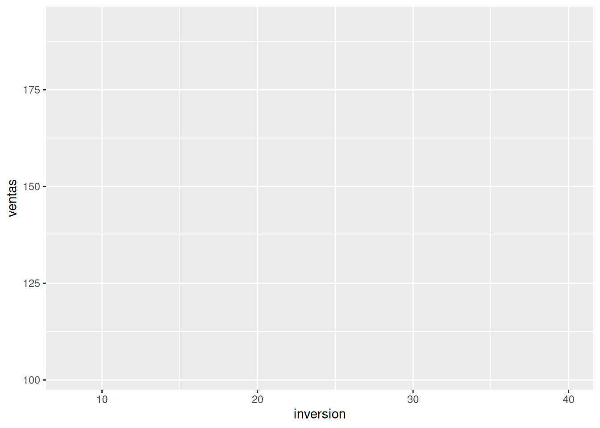
Tercer paso :
Crear grafico base con las diferentes geometrías
Con la geometría definimos el tipo de gráfico. El
geom_point() crea el diagrama de dispersión, muy usado para
visualizar relaciones entre variables.
p <- p + geom_point()
p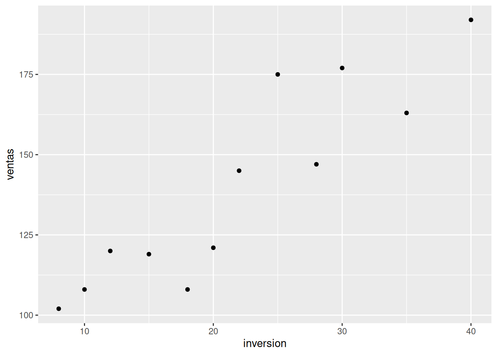
| geo_point() | geom_bar() | geom_col() | stat_count() |
| geom_boxplot() | stat_boxplot() | geom_density() | stat_density() |
| geom_histogram() | geom_violin() |
Cuarto paso:
Agregar características adicionales
Se pueden incluir colores, tamaños y transparencia para resaltar grupos o categorías. Esto ayuda a hacer comparaciones por segmentos.
p <- ggplot(campanas, aes(x = inversion, y = ventas, color = canal)) +
geom_point(size = 2, alpha = 0.7) # Tamaño y transparencia de los puntos
p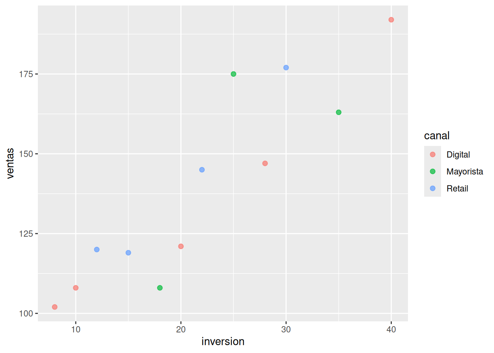
Quinto paso:
Agregar título, etiquetas a los ejes y leyenda
Los títulos y etiquetas convierten un gráfico técnico en uno comunicativo. En contextos de negocio, esto facilita que el lector entienda el mensaje sin leer el código.
p <- p + labs(title = "Relación entre inversión y ventas",
subtitle = "Clasificación por canal comercial",
x = "Inversión en pauta (millones COP)",
y = "Ventas (millones COP)",
color = "Canal"
)
p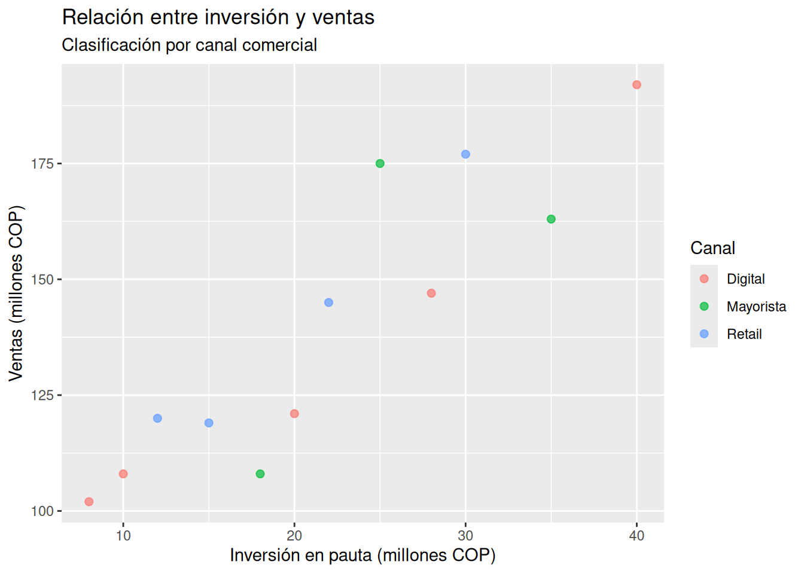
Sexto paso:
Agregar una línea de tendencia
La línea de tendencia resume la relación general entre las variables. Es útil para explicar patrones de crecimiento o caída en términos gerenciales.
p <- p + geom_smooth(method = "lm", se = FALSE, linetype = "dashed", color = c31)
p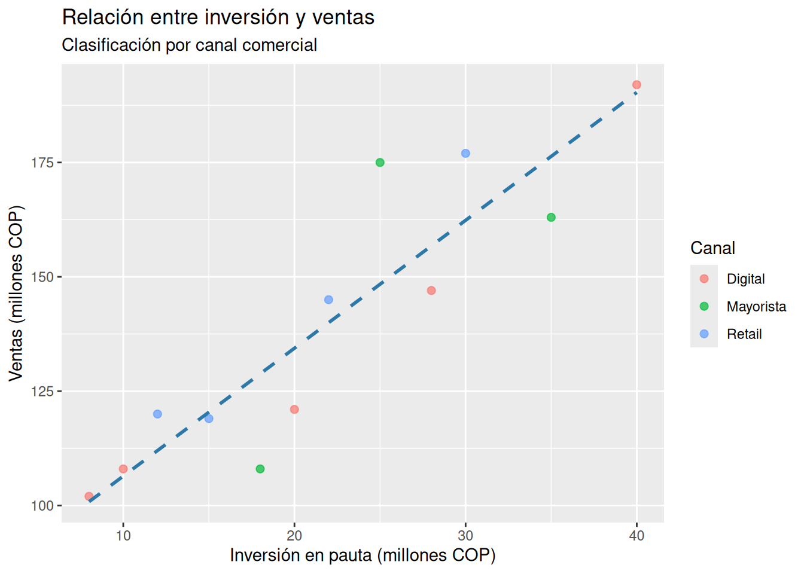
Séptimo paso:
Agregar un tema o fondo
El tema define el estilo visual. Un tema limpio mejora la legibilidad, especialmente en presentaciones o informes.
p <- p + tema_curso(base_size = 14)
p`geom_smooth()` using formula = 'y ~ x'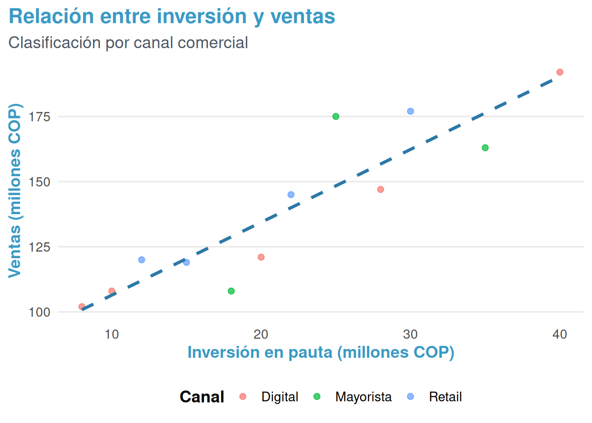
Octavo paso:
Ajustar la escala de colores
La escala de color debe ser coherente y fácil de interpretar. En dashboards o reportes, colores consistentes ayudan a comparar gráficos entre sí.
library(ggplot2)
# Crear el gráfico desde cero
p <- ggplot(campanas, aes(x = inversion, y = ventas, color = canal)) +
geom_point(size = 4, alpha = 0.7) + # Agregar puntos
scale_color_manual(values = paleta_curso) + # Paleta oficial del sitio
labs(
title = "Relación entre inversión y ventas",
subtitle = "Clasificación por canal comercial",
x = "Inversión en pauta (millones COP)",
y = "Ventas (millones COP)",
color = "Canal"
) +
tema_curso(base_size = 12)
# Mostrar el gráfico
pWarning: No shared levels found between `names(values)` of the manual scale and the data's colour values.
No shared levels found between `names(values)` of the manual scale and the data's colour values.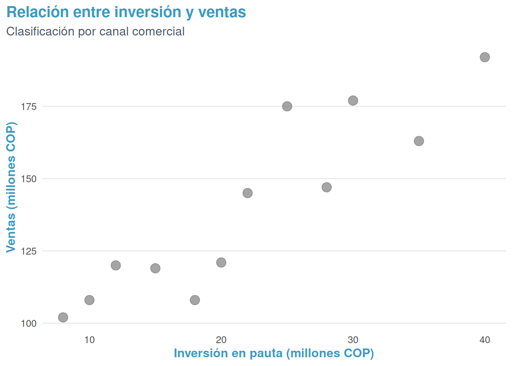
gráfico completo !!
Otros gráficos
A continuación se muestran ejemplos adicionales para ampliar el repertorio. La idea es que puedas reconocer qué gráfico usar según la pregunta del análisis.
library(ggplot2)
data=data.frame(linea_producto=c("Aseo","Bebidas","Snacks","Hogar","Tecnología","Mascotas"),frecuencia=c(48, 59, 65, 41, 36, 28))
ggplot(data, aes(x=linea_producto, y=frecuencia)) +
geom_bar(stat="identity", fill=c11)+
geom_text(aes(label=frecuencia), vjust=2.5, color="white", size=4)+
labs(x = "Línea de producto", y = "Ventas (miles de unidades)") +
tema_curso()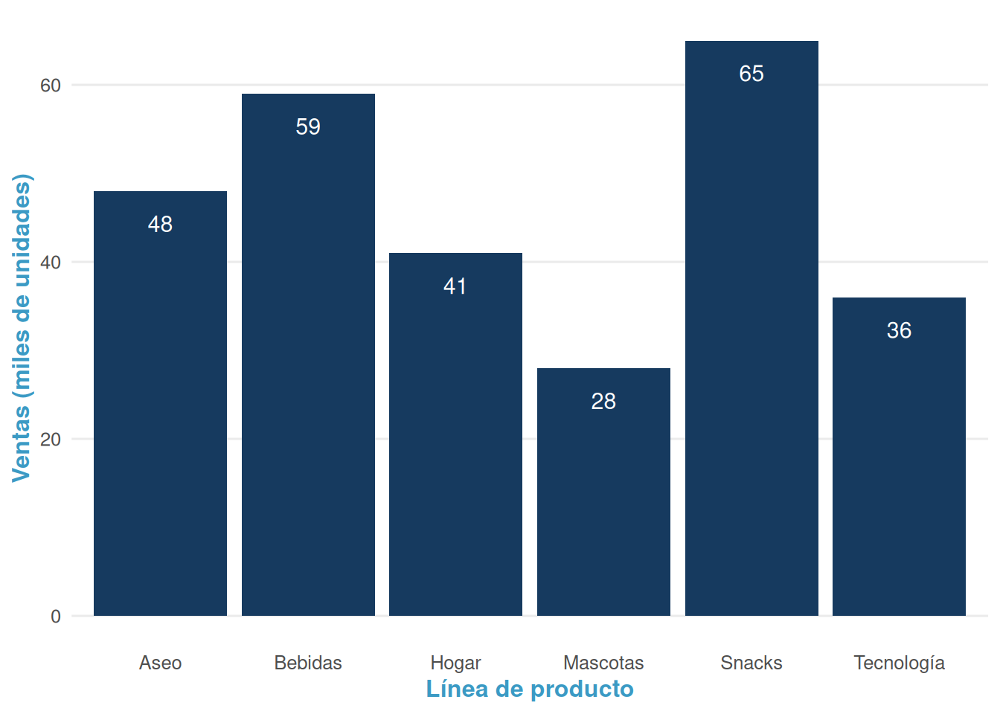
set.seed(123)
df_ticket <- tibble(ticket = rlnorm(500, meanlog = log(90), sdlog = 0.35))
ggplot(df_ticket, aes(ticket)) +
geom_histogram(bins = 7, fill = c11, color = c41, alpha = 0.9) +
tema_curso() +
labs(x = "Ticket promedio (miles COP)", y = "frecuencia absoluta") +
ggtitle("Distribución del ticket de compra")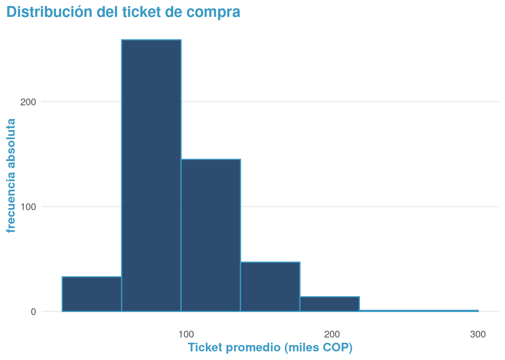
set.seed(123)
df_canal <- tibble(
canal = sample(c("Digital", "Tienda física", "Mayorista"), 400, replace = TRUE),
ticket = rlnorm(400, meanlog = log(95), sdlog = 0.3)
)
ggplot(df_canal, aes(x=ticket, y=canal)) +
geom_boxplot(fill=c(c12,c32,c42), # color de relleno
color = c41, # color de lineas
alpha=0.5)+
geom_point(color=c11,alpha=0.2) +
labs(x = "Ticket promedio (miles COP)", y = "Canal") +
tema_curso()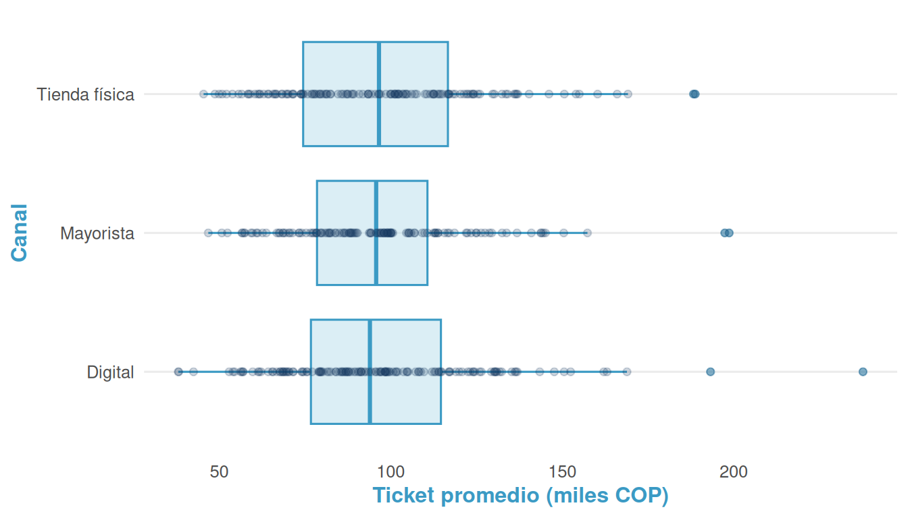
Visualizaciones modernas para decisiones
Los gráficos modernos no tienen que ser complejos. Deben reducir ruido, dirigir la atención al hallazgo y permitir explorar detalles cuando esa interacción aporte valor. Los siguientes ejemplos conservan la identidad cromática del sitio.
Lollipop: comparación compacta
El gráfico lollipop es una alternativa ligera a las barras. Funciona bien para rankings ejecutivos cuando interesa destacar la posición y el valor de cada categoría.
ranking <- tibble(
producto = c("Aseo", "Bebidas", "Snacks", "Hogar", "Tecnología", "Mascotas"),
ventas = c(48, 59, 65, 41, 36, 28)
) |>
arrange(ventas) |>
mutate(producto = factor(producto, levels = producto))
ggplot(ranking, aes(ventas, producto)) +
geom_segment(aes(x = 0, xend = ventas, yend = producto),
linewidth = 1.4, color = c32) +
geom_point(size = 4.5, color = c31) +
geom_text(aes(label = ventas), hjust = -0.8, color = c41, fontface = "bold") +
scale_x_continuous(expand = expansion(mult = c(0, .1))) +
labs(
title = "Ventas por línea de producto",
subtitle = "Ranking de unidades vendidas",
x = "Miles de unidades", y = NULL,
caption = "Fuente: datos simulados"
) +
tema_curso()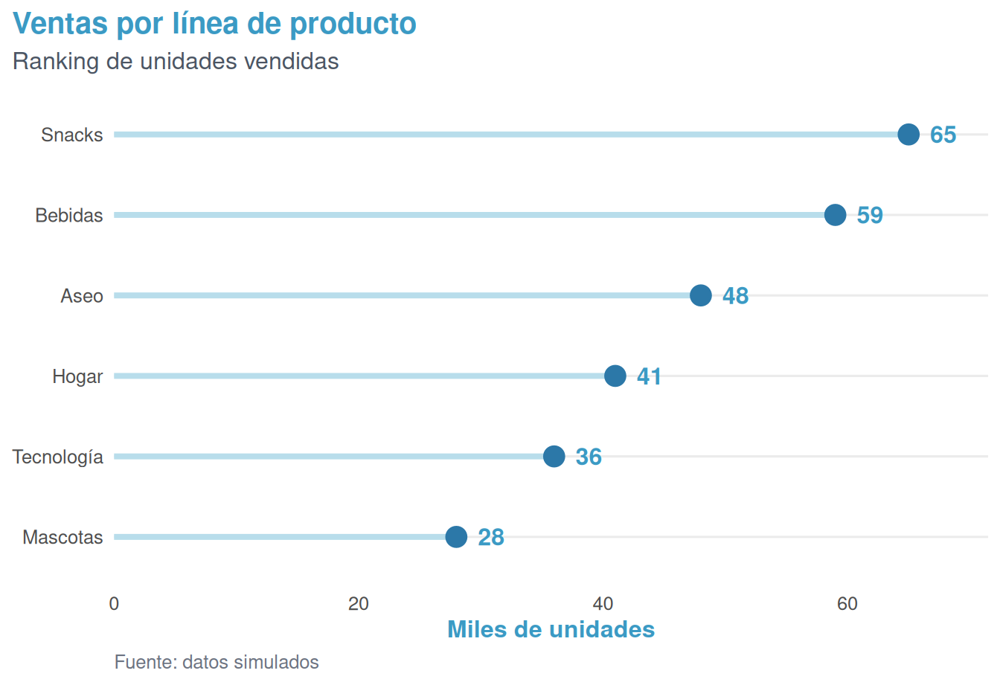
Mapa de calor: concentración de actividad
Un mapa de calor revela patrones en dos dimensiones. Aquí permite detectar los momentos de mayor tráfico sin obligar al lector a revisar una tabla extensa.
set.seed(123)
trafico <- expand_grid(
dia = factor(c("Lun", "Mar", "Mié", "Jue", "Vie"),
levels = rev(c("Lun", "Mar", "Mié", "Jue", "Vie"))),
hora = 8:18
) |>
mutate(visitas = round(40 + 35 * exp(-((hora - 13)^2) / 10) +
if_else(dia == "Vie", 18, 0) + rnorm(n(), 0, 26)))
ggplot(trafico, aes(hora, dia, fill = visitas)) +
geom_tile(color = "white", linewidth = .8) +
scale_fill_gradientn(colors = c(c42, c31, c61), name = "Visitas") +
scale_x_continuous(breaks = seq(8, 18, 2)) +
labs(
title = "Tráfico digital por día y hora",
subtitle = "Los tonos intensos indican mayor actividad",
x = "Hora", y = NULL, caption = "Fuente: datos simulados"
) +
tema_curso()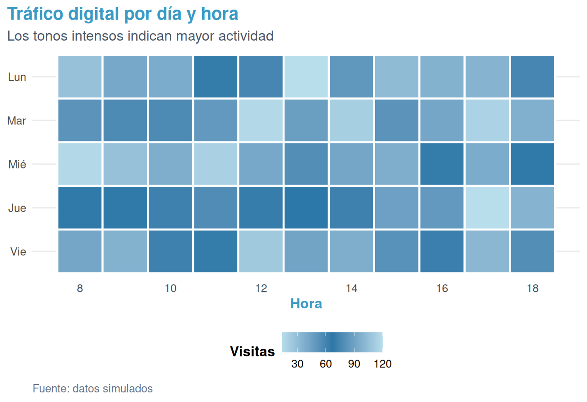
Tabla interactiva: detalle bajo demanda
Cuando el lector necesita buscar, ordenar o filtrar registros, una tabla interactiva complementa al gráfico. La búsqueda y la paginación evitan sobrecargar la página.
library(DT)
datatable(
campanas,
rownames = FALSE,
filter = "top",
options = list(pageLength = 6, dom = "ftip", autoWidth = TRUE),
colnames = c("Inversión (millones COP)", "Ventas (millones COP)", "Canal")
) |>
formatStyle(
"canal",
color = "white",
backgroundColor = styleEqual(levels(campanas$canal), unname(paleta_curso[1:3]))
)Úsala cuando el lector necesite comparar puntos, consultar valores exactos, filtrar categorías o ampliar un periodo. Para informes impresos o para comunicar un único hallazgo, una figura estática bien anotada suele ser más efectiva.
Gráficos con plotly
plotly permite convertir gráficos en interactivos. Esto
es útil para presentaciones donde el usuario puede pasar el mouse y ver
detalles sin saturar la pantalla.
# install.packages("plotly") # ejecutar una sola vez si fuera necesario
# Cargar librerías necesarias
library(ggplot2)
library(plotly)
# Crear base ejemplo para campañas
campanas <- tibble(
inversion = c(8, 10, 12, 15, 18, 20, 22, 25, 28, 30, 35, 40),
ventas = c(102, 108, 120, 119, 108, 121, 145, 175, 147, 177, 163, 192),
canal = factor(c("Digital", "Digital", "Retail", "Retail", "Mayorista", "Digital",
"Retail", "Mayorista", "Digital", "Retail", "Mayorista", "Digital"))
)
# Crear gráfico base con ggplot2
p <- ggplot(campanas, aes(
x = inversion, y = ventas, color = canal,
text = paste(
"Canal:", canal, "<br>",
"Inversión:", inversion, " millones COP<br>",
"Ventas:", ventas, " millones COP"
)
)) +
geom_point(size = 2, alpha = 0.7) + # Agregar puntos
scale_color_manual(values = paleta_curso) + # Paleta oficial del sitio
labs(
title = "Relación entre inversión y ventas",
subtitle = "Datos de campañas comerciales",
x = "Inversión en pauta (millones COP)",
y = "Ventas (millones COP)",
color = "Canal"
) +
tema_curso(base_size = 14)
# Convertir el gráfico de ggplot2 a un gráfico interactivo con Plotly
p_interactivo <- ggplotly(p, tooltip = "text") |>
layout(legend = list(orientation = "h", x = 0, y = -0.2)) |>
config(displaylogo = FALSE, responsive = TRUE)
# Mostrar el gráfico interactivo
p_interactivoGráficos con highcharter
highcharter es otra opción para gráficos interactivos
con estética profesional. Suele usarse en tableros ejecutivos por su
estilo limpio y opciones de personalización.
# Instalar paquetes si es necesario
# install.packages("highcharter")
# install.packages("dplyr")
# Cargar librerías necesarias
library(highcharter)
library(dplyr)
# Crear base para campañas comerciales
campanas <- tibble(
inversion = c(8, 10, 12, 15, 18, 20, 22, 25, 28, 30, 35, 40),
ventas = c(102, 108, 120, 119, 108, 121, 145, 175, 147, 177, 163, 192),
canal = factor(c("Digital", "Digital", "Retail", "Retail", "Mayorista", "Digital",
"Retail", "Mayorista", "Digital", "Retail", "Mayorista", "Digital"))
)
# Crear gráfico interactivo con highcharter
hchart(campanas, "scatter", hcaes(x = inversion, y = ventas, group = canal, name = canal)) %>%
hc_colors(colors = unname(paleta_curso[1:3])) %>%
hc_title(text = "Relación entre inversión y ventas") %>%
hc_subtitle(text = "Datos de campañas comerciales por canal") %>%
hc_xAxis(title = list(text = "Inversión (millones COP)")) %>%
hc_yAxis(title = list(text = "Ventas (millones COP)")) %>%
hc_tooltip(
useHTML = TRUE,
pointFormat = "<b>Canal:</b> {point.name}<br>
<b>Inversión:</b> {point.x} millones COP<br>
<b>Ventas:</b> {point.y} millones COP"
) %>%
hc_chart(zoomType = "xy")Estética en la visualización
Además de la elección del gráfico, el diseño visual influye en la interpretación. Una buena estética mejora la comprensión y evita confusiones en la lectura de resultados.
La estética juega un papel fundamental en la visualización de datos, ya que ayuda a hacer que la información sea más comprensible y atractiva para el espectador. Entre las diferentes formas de estética utilizadas en la visualización, se encuentran:
- Forma
- Tamaño
- Color
- Ancho línea
- Tipo línea
- 1D, 2D, 3D
La posición se refiere a la ubicación de los elementos dentro de la visualización y es fundamental para transmitir información espacial. Por lo general haciendo referencia al plano cartesiano (2D) e indicando relaciones de asociación y correlación entre variables.
La forma se refiere a la apariencia de los elementos, que puede ser útil para representar categorías o para resaltar ciertos datos, como pueden ser: circulos, cuadrados, triangulos, estrellas, entre otras formas.
El tamaño, por otro lado, se utiliza para indicar magnitudes y hacer que ciertos elementos destaquen sobre otros.
El color es una de las estéticas más poderosas en la visualización, ya que puede transmitir información de manera rápida y efectiva. Se puede utilizar para representar categorías, resaltar elementos importantes o crear jerarquías visuales. Tambien reforzando el significado de la variable, por ejemplo en presentación de resultados de clima laboral se utilizan colores relacionados con el semaforo (escalas entre rojo y verde), para representar magnitudes desde colores suaves a colores fuertes para indicar grandes cantidades. Por último tambien se emplean colores para resaltar un nivel u objeto dentro de todo el grupo.
El ancho de línea y el tipo de línea se utilizan para diferenciar entre elementos y resaltar ciertos aspectos de la visualización.
La dimensión (1D, 2D, 3D) se refiere a la cantidad de dimensiones que se utilizan en la visualización. Mientras que las visualizaciones 1D se limitan a una sola dimensión, como una línea de tiempo, las visualizaciones 2D y 3D pueden representar información en dos o tres dimensiones, lo que permite una representación más detallada y compleja de los datos. Es recomendable no utilizar 3D para que las visializaciones sean más limpias y sencillas
Formas
Es posible utilizar circulos, cuadrados, triangulos y en general figuras geométricas para resaltar puntos que represente valores numéricos en un plano 2D y de esta forma representar una secuencia o tendencia de la información.
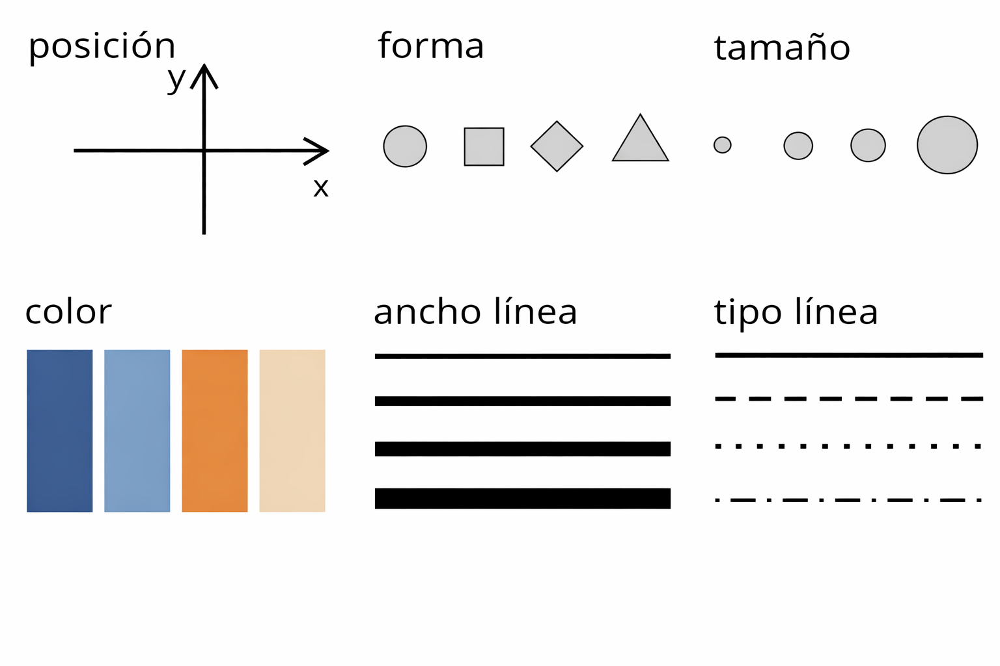
Paletas
Las paletas ayudan a mantener consistencia y a diferenciar categorías. En mercadeo, una paleta bien elegida refuerza la identidad visual del informe.
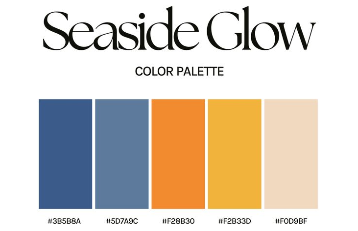
Tomada de PinteresNormas APA
En trabajos académicos y corporativos es clave seguir normas de presentación. Esto asegura que los gráficos sean claros, comparables y bien documentados.
Aquí tienes el texto ajustado al enfoque de las normas APA (7.ª edición) para figuras y gráficos, manteniendo una estructura similar a la que tenías:
Las normas APA orientan la elaboración y presentación de figuras (gráficos, diagramas, mapas, etc.) para asegurar claridad, precisión y consistencia en la comunicación académica. En términos prácticos, estas recomendaciones se reflejan en los siguientes criterios:
Claridad y legibilidad
El gráfico debe entenderse con rapidez y sin esfuerzo. Evita elementos decorativos innecesarios y prioriza un diseño limpio. Usa tipografías legibles, tamaños adecuados y un contraste suficiente entre elementos (líneas, puntos, barras y texto).
Precisión y fidelidad de los datos
La figura debe representar los datos de manera exacta, sin distorsiones. Utiliza escalas apropiadas y proporcionales, indica unidades de medida, y cuida que las comparaciones visuales sean correctas. Si se presentan porcentajes, verifica coherencia (por ejemplo, totales consistentes cuando aplique).
Rotulación y organización según APA
En APA, un gráfico se presenta como Figura y debe incluir:
- Número de figura (por ejemplo, Figura 1).
- Título de la figura (claro y descriptivo).
- El gráfico (contenido visual).
- Nota de figura si es necesaria (para aclarar abreviaturas, describir símbolos, indicar fuente o explicar detalles metodológicos).
Consistencia y estilo académico
Mantén coherencia en el formato a lo largo del informe: mismos estilos de ejes, tamaños de letra, criterios de color y formato de leyendas. Las etiquetas de ejes deben ser claras, con nombres completos (o abreviaturas explicadas en nota).
Accesibilidad y uso del color
Usa el color solo cuando aporte información. Evita combinaciones que dificulten la lectura y procura que el gráfico sea interpretable incluso en escala de grises (por ejemplo, con patrones, formas o distintos tipos de línea). Esto mejora la accesibilidad y la calidad de impresión.
Ejemplos
set.seed(123)
ventas_dia <- tibble(ventas = rlnorm(400, meanlog = log(2.6), sdlog = 0.35))
ggplot(ventas_dia, aes(x = ventas)) +
geom_histogram(fill = "steelblue", bins = 10, color = "black", alpha = 0.7) +
labs(
title = "Distribución de ventas por transacción",
x = "Ventas por transacción (millones COP)",
y = "Frecuencia",
caption = "Fuente: Datos simulados de ventas"
) +
tema_curso()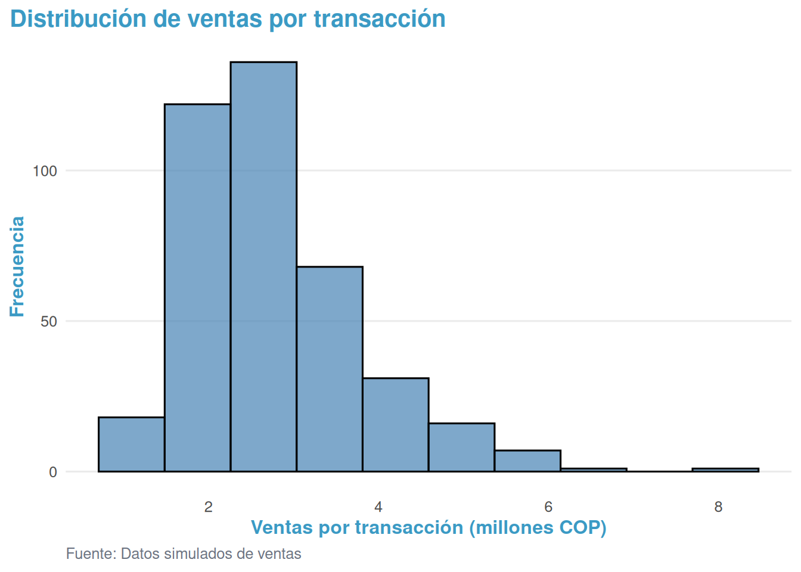
Este ejemplo muestra cómo incluir títulos, ejes y fuente, cumpliendo criterios de claridad y fidelidad en la presentación de datos.
set.seed(123)
camp <- tibble(
inversion = runif(120, 8, 45),
ventas = 65 + 8.5 * inversion + rnorm(120, 0, 30)
)
ggplot(camp, aes(x = inversion, y = ventas)) +
geom_point(color = c41, size = 2, alpha = 0.7) +
geom_smooth(method = "lm", se = FALSE, color = c11, linetype = "dashed") +
labs(
title = "Relación entre inversión publicitaria y ventas",
x = "Inversión (millones COP)",
y = "Ventas (millones COP)",
caption = "Fuente: Datos simulados de campañas"
) +
tema_curso()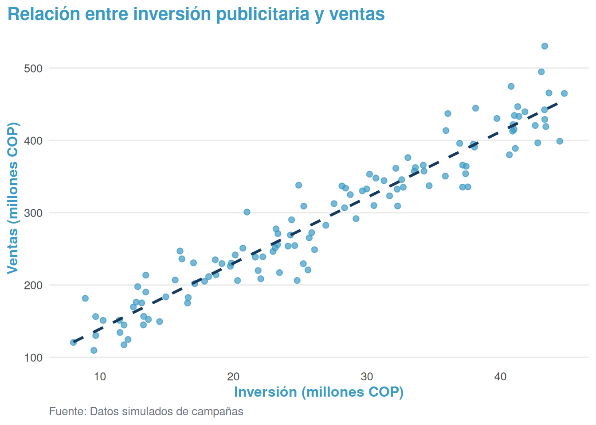
Este segundo ejemplo integra una tendencia lineal para apoyar la interpretación, algo útil en análisis de productividad o eficiencia.
library(ggplot2)
library(ggthemes)
ggplot(campanas, aes(inversion, ventas)) +
geom_point(size=2) +
theme_economist() +
labs(title="ggthemes: inversión vs ventas")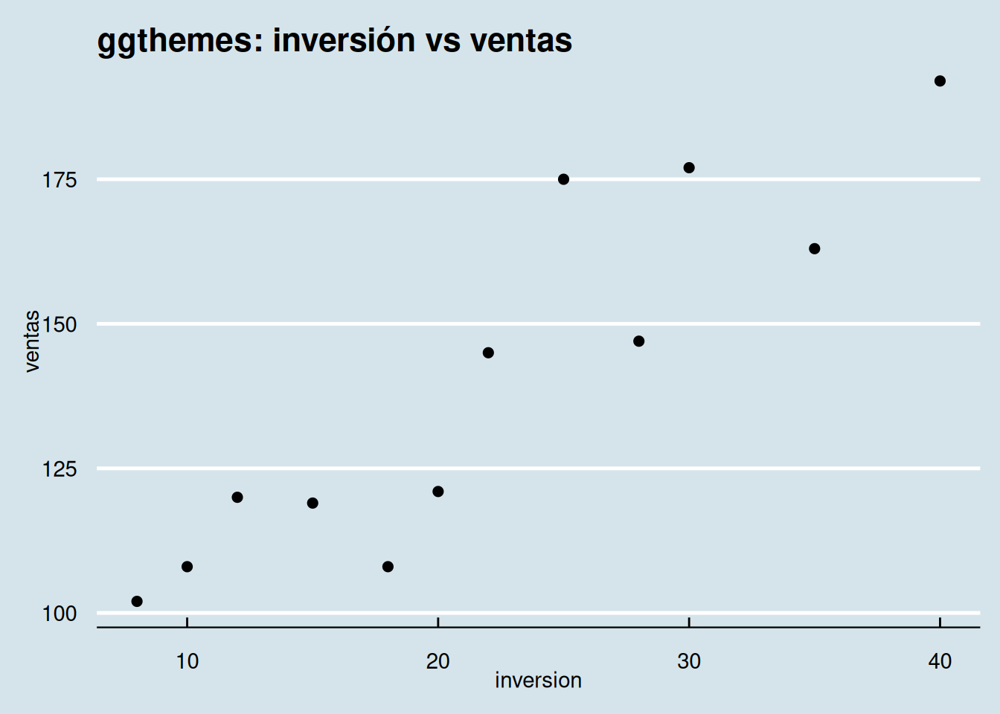
library(ggplot2)
library(ggrepel)
df <- campanas
df$campana <- paste0("Campaña ", seq_len(nrow(df)))
ggplot(df, aes(inversion, ventas, label = campana)) +
geom_point(size=2) +
geom_text_repel() +
labs(title="ggrepel: etiquetas de campañas")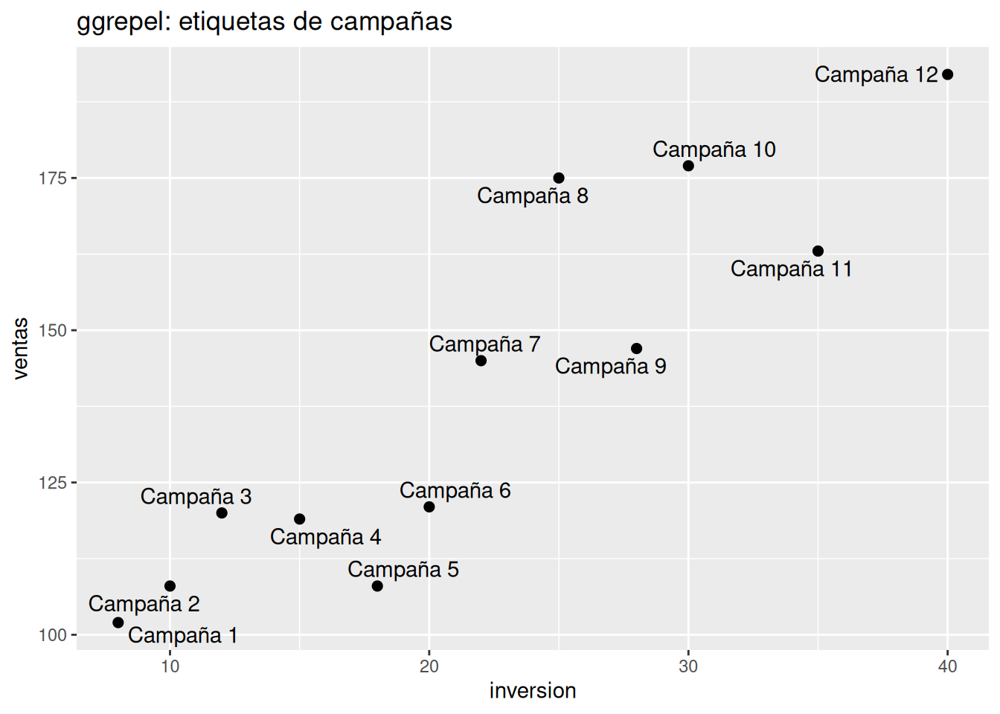
library(ggplot2)
library(ggiraph)
par(mar=c(5,16,4,2)+0.1)
p <- ggplot(campanas, aes(inversion, ventas, tooltip = canal)) +
geom_point_interactive(size = 3, color = c31) +
tema_curso()
girafe(ggobj = p)# install.packages("likert")
library(likert)
par(mar=c(5,16,4,2)+0.1)
# Datos simulados (respuestas tipo Likert)
set.seed(123)
n <- 120
datos <- data.frame(
Servicio = factor(sample(c("Totalmente en desacuerdo","En desacuerdo","Neutral",
"De acuerdo","Totalmente de acuerdo"), n, TRUE),
levels = c("Totalmente en desacuerdo","En desacuerdo","Neutral",
"De acuerdo","Totalmente de acuerdo"),
ordered = TRUE),
Precio = factor(sample(c("Totalmente en desacuerdo","En desacuerdo","Neutral",
"De acuerdo","Totalmente de acuerdo"), n, TRUE),
levels = c("Totalmente en desacuerdo","En desacuerdo","Neutral",
"De acuerdo","Totalmente de acuerdo"),
ordered = TRUE),
Calidad = factor(sample(c("Totalmente en desacuerdo","En desacuerdo","Neutral",
"De acuerdo","Totalmente de acuerdo"), n, TRUE),
levels = c("Totalmente en desacuerdo","En desacuerdo","Neutral",
"De acuerdo","Totalmente de acuerdo"),
ordered = TRUE)
)
# Construir objeto Likert y graficar
lk <- likert(datos)
p =plot(lk,
centered = TRUE,
main = "Encuesta de satisfacción (Likert)",
xlab = "Porcentaje de respuestas")
p +
theme(
legend.text = element_text(angle = 0, hjust = 1, vjust = 1)
)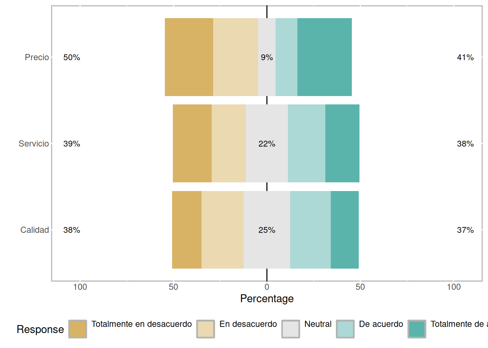
# install.packages("plotly")
library(plotly)
set.seed(123)
df <- data.frame(
Edad = round(rnorm(100, mean = 35, sd = 5),0),
Ingreso = rnorm(100, mean = 5500, sd = 1000),
Grupo = sample(c("A", "B", "C"), 100, replace = TRUE)
)
p <- plot_ly(
data = df,
x = ~Edad, y = ~Ingreso,
type = "scatter", mode = "markers",
color = ~Grupo, colors = unname(paleta_curso[1:3]),
text = ~paste0("Grupo: ", Grupo,
"<br>Edad: ", round(Edad, 1),
"<br>Ingreso: ", round(Ingreso, 0)),
hoverinfo = "text",
marker = list(size = 10, opacity = 0.8)
) %>%
layout(
title = "Dispersión interactiva (Plotly)",
xaxis = list(title = "Edad (años)"),
yaxis = list(title = "Ingreso (COP)")
)
pUna imagen dice mas que mil palabras…
Las imágenes también comunican contexto y refuerzan la narrativa del informe. En presentaciones de mercadeo, una foto puede conectar datos con la realidad del entorno.
Daniel Enrique González Gómez
Imagen tomada de :https://javerianacali.edu.co/noticias/la-javeriana-bogota-y-cali-1-de-colombia